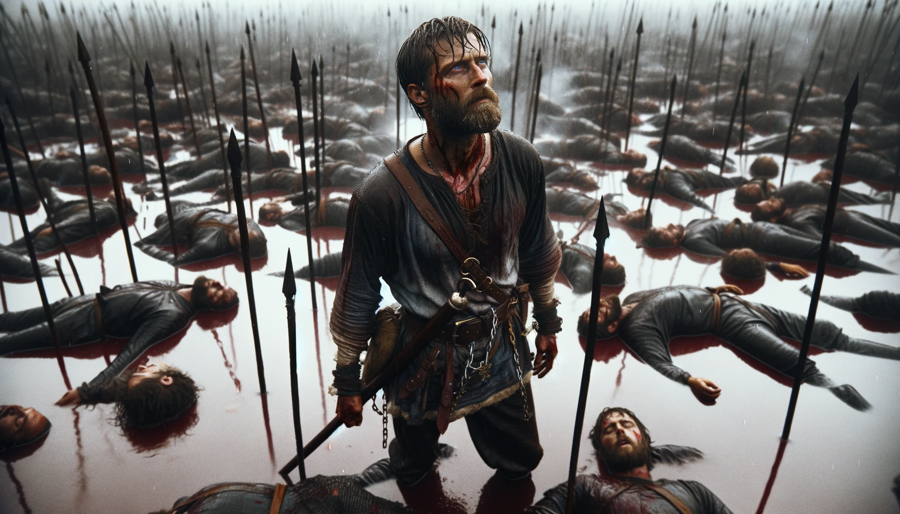

- 인지부조화라는 단어가 있습니다.
- 기존에 가지고 있던 것과 반대되는 상황에 놓였을 때 느끼는 불편과 스트레스를 말합니다.
- 머리와 상반신은 광속으로 날아가는 롤러코스터에 얹혀있는데,
- 발붙인 땅은 90년대에 머무른 느낌을 받을 때 괴롭습니다.
1. ChatGPT DALL.E
- ChatGPT에 탑재된 DALL.E는 속칭 챗달이라 불립니다.
- Bing Chat(現 Copilot)에 탑재된 DALL.E와 구분하기 위한 이름입니다.
- Copilot에 탑재된 DALL.E는 Bing Image Creator에 의지하며 빙달이라고 불립니다.
- 빙달이보다 챗달이를 좋아합니다.
- 자유로운 채팅으로 prompt를 더하며 그림을 고치기 좋고,
- image seed number를 유지하며 연속으로 이미지를 그려내기 좋기 때문입니다.
- 아래 그림은 <최애의 아이>에서 모티브를 얻어 그린 짧은 연작입니다.
input prompt: A cute and extraordinary beutiful japanese high 16 years old girl standing strong on rooftop of a hospital at night. She is wearing padding over skirt, and white sneakers with black stripe on it. A very bright star is blinking blue above her. Behind her a sillhouette of mountain ridge is seen. Front view. Anime
ChatGPT prompt: Anime style illustration of a 16-year-old Japanese girl standing confidently on a hospital rooftop at night. She has a cute and extraordinary beauty, dressed in a unique outfit with padding over her skirt and white sneakers featuring a black stripe. A bright blue star twinkles above her in the night sky. Behind her, the silhouette of a mountain ridge is visible. The scene is captured from a front view, emphasizing her strong stance and the dramatic night setting.
additional prompt: Keep image seed number. Let her sing and dance on stage under spotlight as an idol, double explosure, close up her face.
ChatGPT prompt: Anime style illustration, double exposure effect, showing the same 16-year-old Japanese girl both singing and dancing on stage as an idol under a spotlight, and a close-up of her face. She embodies a lively and captivating presence, with the stage scene capturing her in mid-performance and the close-up emphasizing her expressions while singing. The scene is vibrant and dynamic, reflecting the energy of a live performance. Keep the image seed number to maintain consistency in her appearance.
additional prompt: Let the idol in the image standing with smile next to a kinderwagen for twins. In the kinderwagen baby boy and girl resemble thier mother are smilimg, too. Their 눈동자 are blinking with a shape of Spotlight from every direction.
ChatGPT prompt: Anime style illustration of the same 16-year-old Japanese idol girl, smiling and standing next to a twin stroller (kinderwagen). Inside the stroller, there’s a baby boy and a baby girl who resemble their mother and are also smiling. Unique detail: their pupils (눈동자) are blinking with spotlight shapes shining from multiple directions, adding a magical, whimsical element to the scene. The overall image is heartwarming and reflects a joyful family moment.

additional prompt: Keep the image seed number. The boy and girl twins are swinging a glowing red sticks in synchronized mode in the twins kinderwagen, at standing seat of dark but surrounded by splendid lights concert stadium. On their behind many fans are doing the same movement. All they are concentrated on the stage where their mother is performing.
additional prompt: convert one child to a boy. Let them sit in one twins Kinderwagen and wave the glowing red stick together as the audience do.
ChatGPT prompt: Anime style illustration, adjusting the previous scene. In the twin stroller (kinderwagen), one child is a boy and the other a girl. They are sitting together, waving a single glowing red stick in unison with the audience. The scene is set in a concert stadium, filled with the vibrant energy of a live performance. The audience around them is also waving glowing sticks, creating a unified and lively atmosphere. The focus is on the joy and excitement shared by the twins and the fans, all immersed in the concert experience.
2. 중세 병사 이야기
- 작년 말, 영혼과 몸이 분리된 것처럼 느껴진 날들이 있었습니다.
- 한참 매일같이 여러 장의 그림을 그리며 스트레스를 풀던 때였던지라 내 마음을 반영한 연작을 꽤 오래 그렸습니다.
- 약 3주에 걸쳐 총 14장의 그림으로 시리즈가 마무리된 연작을 정리합니다.
- 그 때 그 때 페이스북에 정리했던 당시의 심경을 기억나는 제 속마음과 함께 그대로 가져옵니다.
(1) 오전이 날아갔다. (2023.11.22.)
- 순식간에 점심시간.
- 문서작업만 했더니 그 새 시대에 뒤쳐진 느낌이 든다.
- 이제는 코딩할 시간. 따라잡자.
Input prompt: Sephia tone photograph of a medieval solder {featured as color} armed with chain mail with leather clothes on it, pike and round wooden should. He is crouching with fear and panic in trench, as well as other soldiers {dressed as solders in world war I}. Bullet marks are clearly seen on the gunny bag behind them, altogether arrows and javelin. On the ground only dead bodies of solders are scattered, drone view.
ChatGPT: A sepia-toned photograph depicting a medieval soldier in color, wearing chain mail and leather clothes, holding a pike and round wooden shield. He is crouching in fear and panic in a trench alongside other soldiers dressed in World War I attire. The scene includes bullet marks on gunny bags behind them, along with arrows and javelins. The ground is scattered with the bodies of fallen soldiers, viewed from a drone perspective.
- 신기술, 정확히는 Azure OpenAI를 좀 공부해볼까 하던 차에 행정업무가 날아왔다.
- 짬짬이 YouTube에서, facebook에서 세상이 바뀌는 소리를 들으며 뛰어들 준비를 하고 있었는데
- 졸지에 hwp 문서를 껴안고 오전 내내 보내니 절망에 휩싸였다.
- 시간은 나만 빼고 흘러가고 사람들은 나만 빼고 발전하는 느낌. 무섭기까지 했다.
- 나무방패에 창 한 자루를 들고 1차대전 참호 속으로 떨어진 병사의 이미지가 떠올랐다.
- 얼마나 무서울까. 어디선가 쓩쓩 소리가 들리고 옆에 있는 사람이 갑자기 쓰러지는데.
- 의도한 건 아닌데 쓰러진 사람 한 명은 목 위가 없다.
- 이 그림을 그리며 엔딩을 정했다.
- Azure OpenAI에서 총을 들고 있는 모습으로 그리는 그림이 마지막이다.
(2) 돌격 준비 (2023.11.23.)
- 정신은 차렸고 총 하나 주웠다.
- 체인메일이 무겁긴 하지만 스쳐가는 총알 정도는 막아주겠지.
- 총알 세 개만 잘 쏘면 된다.
- 체력을 끌어올리고 집중하자.
Add. prompt: Let the medieval soldier standing up leaning on the toy rifle, encouraging himself. he is wearing modern combat uniform over the chain mail, carefully extend his upper body over the trench, looking far, ready for assault. extreme close up to his face, landscape view, gopro.
ChatGPT prompt: An extreme close-up, landscape view of a medieval soldier standing up and leaning on a toy rifle, encouraging himself. He is wearing a modern combat uniform over his chain mail. The soldier is carefully extending his upper body over the trench, looking into the distance, ready for assault. The focus is on his face, with a GoPro-style perspective.
- 다음날에는 기를 쓰고 코딩을 했다.
- 그 바람에 행정업무가 밀렸지만 상관없었다. 나를 살아있게 하는 건 이 일이다.
- 마음이 한결 나아졌다. 그래도 이 참호에서 살아나갈 수는 있겠다는 생각이 들었다.
- 신경쓰이는 업무 일정이 세 개 있었다. 그래서 총알 세 발이라고 했다.
(3) 숨이 몰아쉬어진다 (2023.11.23.)
- 이번주 스케줄이 하이라이트를 향해서 간다.
- 과제가 하나 오늘 끝나고
- 교재 집필이 하나 내일 끝난다.
- 그 와중에 새 업무가 또 들어왔다.
- 쳐내는 행정업무도 아니고 온몸으로 파도를 막아서야 하는데
- 조금만 더 힘내자. 다 온 것 같다.
Add. prompt: Let the solder leaning against gunny bags in trench, eyes almost closed but slightly open, gasping, holding the rifle tight with two hands on his chest. Some soils are scattered on his face, hands and bodies. The chain mail is partly torn own. side view. Keep all other components including the image seed numbers.
ChatGPT prompt: A side view of the medieval soldier leaning against gunny bags in a trench. His eyes are almost closed but slightly open, appearing to be gasping, and holding a rifle tight with both hands on his chest. Soil is scattered on his face, hands, and body. The chain mail he’s wearing is partly torn. The scene maintains the same style and elements as the previous images, including the use of specified image seed numbers.
- 머리가 조금 어지러웠던 것으로 기억한다.
- 지금 하는 일 때문이 아니라 오래 전부터 쌓여 있던 하기 싫은 일, 그리고 해야 하는 일, 너무 밀려서 상대에게 미안한 일 때문에.
(4) 진창이 길다 (2023.11.24.)
- 총은 계속 잡고 가고 있는데 진흙에 젖은 갑옷이 무거워진다.
- 방패는 버렸다. 무겁기만 하고 어차피 총알을 못 막는다.
- 판금 헬멧이 도움이 될까 싶지만 벗을 용기가 안난다.
- 안 쓴 것보단 낫겠지 싶은. 플라시보에 가까운.
Add. prompt: Make the soldier crawl on the puddle, holding rifle in a hand tightly without helmet. Hardly breathing because his head is half sunken to the mud, trying to look forward. front view, close up. Some muds are in the joint part of the chain mail, still partially torn out.
ChatGPT prompt: A front view, close-up of the medieval soldier crawling on a puddle, holding a rifle tightly in one hand, without a helmet. His head is half-sunken in the mud, struggling to breathe and trying to look forward. Mud is visible in the joints of his partially torn chain mail. The scene continues the narrative from the previous images, maintaining the same style and using the specified image seed numbers.
- 숨을 돌리려고 YouTube를 켰다가 우연히 강철부대 클립을 봤다.
- 최고의 병사들이 타이어를 끌고 철조망 밑 물웅덩이를 기어서 통과하고 밧줄을 오르다 탈진을 했다.
- 타이어가 물을 먹어 체력 소진이 컸다는 아쉬움 가득한 목소리에 내가 다 아쉬웠다.
- 그래도 그들의 눈은 앞을 향하고 있었고, 팔과 다리는 계속 움직였다.
- 덕택에 기운을 냈다.
(5) 다 왔다 (2023.11.24.)
- 남은 목표는 두 개.
- 저것들만 해치우면 집에 갈 수 있다.
- 시간이 늦어 어두워진 바람에 표적이 잘 안보이는 게 문제.
- 떨어진 체력과 추운 공기도 많이 힘겹다.
- 쏠 수 있을까? 손이 떨린다.
Add. prompt: Make the soldier hiding himself behind a bush in forest, sitting tight. He is holding the gun’s buttstock against his shoulder, watching the target {blur lights are seen far away}. With one hand on the barrel of the gun and the other on the trigger, waiting for the right moment to fire. The night is dark and calm. Pale moonlight is reflected on the gun, torn out chain mail {dirty by mud stuck on them}, tip of the spear carrying on his back, and his forehead wet by sweat. white steam comes out of his mouth, depicting cold air. some water droplets on the chain mail seems to be frozen.
ChatGPT prompt: The medieval soldier is hiding behind a bush in a forest, sitting tightly. He holds the buttstock of his gun against his shoulder, peering towards distant blur lights. One hand is on the barrel and the other on the trigger, poised to fire. It’s a dark, calm night with pale moonlight reflecting off his gun, the torn and mud-dirty chain mail, the tip of the spear on his back, and his sweat-wet forehead. White steam is visible from his mouth, indicating the cold air, and some water droplets on the chain mail appear to be frozen. The scene continues the narrative from the previous images, maintaining the same style and using the specified image seed numbers.
- 세 가지 일 중 하나가 끝났다.
- 이제 두 개만 더 끝나면 된다는 생각에 기운이 났다.
- 숨을 고르고 집중을 했다. 시간별 단기 계획도 세웠다.
- 좀 지친게 문제긴 한데, 주말을 이용하면 될 것 같다.
(6) 동이 튼다 (2023.11.26.)
- 한 놈은 잡았다. 생각보다 큰 놈이어서 고전했다.
- 나도 한 대 맞았다. 중과부적이었지만 방심이 컸다.
- 이제 한 놈 남았는데 육신의 고통보다 두려움이 앞선다.
- 날이 춥다. 몸이 차가워진다.
Add. prompt: Let the soldier lying on his back on the field like a sleeping man, but eyes open wide and head up, gasping with pain. a little steam is visible around his body, particularly around nose, indicating the cold air, keep shutting his mouth. He is embracing the barrel of rifle with a hand and pressing the shoulder with another hand. Leather sleeves are torn out. One hand is still on the trigger, ready to shoot. a dark red liquid is flowing down between the fingers on shoulder. The light of dawn is shading on his chain mail slightly. the dew drops on his face and bodies are glittering like golden flakes, drone view.
ChatGPT prompt: The medieval soldier is lying on his back in a field, eyes wide open and head raised, gasping in pain. A little steam is visible around his body, especially around the nose, indicating cold air, with his mouth shut. He’s embracing the barrel of his rifle with one hand and pressing his shoulder with the other. His leather sleeves are torn, and his hand remains on the trigger, ready to shoot. Dark red liquid is flowing down between the fingers on his shoulder. The light of dawn casts a slight shade on his chain mail, and the dew drops on his face and body glitter like golden flakes. The view is from a drone perspective. The scene continues the narrative from the previous images, maintaining the same style and using the specified image seed numbers.
- 쉬운 줄 알았던 일에서 시간을 다 썼다.
- 주말에 둘 다 마치는 게 목적이었는데 하나는 손도 못 댔다.
- 일정이 크게 꼬였다. 체력은 소진됐다. 큰일났다.
(7) 마지막 싸움 (2023.11.26.)
- 길을 따라 가다보니 마지막에 앞을 막은 것은 처음 보는 생명체.
- 부모님의 옛날 이야기에서나 보던 괴물이 길을 막고 있습니다.
- 고대의 망령들과 함께 길을 막고 있지만 여기를 지나가야 합니다.
- 미안하지만 모든 형태의 무력을 써서라도 지나가야 합니다.
- 나도 부귀영화를 바라는 것이 아닙니다.
- 휴식을 하고 싶을 뿐입니다.
- 구멍난 사슬 갑옷은 벗어버렸습니다.
Add. prompt: The soldier is standing up in thick mist {rear view, torn-out backpack and chain mail are seen, close up, his hair is tanged and wet}, grabbing the rifle with his two hands, one hand on trigger, the other hand on barrel, aiming forward. His back is a little crooked but trying to encourage himself. Far in front him a white silhouette of a gigantic creature is seen. The creature is standing on 4 feet like a mixture of rhino , cow and big elephant, but his head is incredible size. Silhouette of its furry skin looks like a thousand of knives or spheres about to pierce him. The creature’s face is not seen due to the thick mist but red light emitted from his 4 eyes are too bright to avoid. The soldier is waving the rifle to aim the creature. The chain mail is almost torn out, therefore the leather jacket inside the mail is exposed. He still carries the pike on his back. close up to the soldier.
ChatGPT prompt: Rear view, close-up of the medieval soldier standing up in thick mist, his hair tangled and wet. He’s grabbing the rifle with two hands, one on the trigger and the other on the barrel, aiming forward. His back is slightly crooked as he tries to muster courage. In front of him, a white silhouette of a gigantic creature is visible, standing on four feet, resembling a mix of a rhino, cow, and large elephant, with an incredibly large head. Its furry skin appears as a thousand knives or spears, poised to pierce. The creature’s face is obscured by the mist, but the bright red light emitted from its four eyes is unmistakable. The soldier is waving the rifle, aiming at the creature. His chain mail is almost torn out, revealing the leather jacket underneath. A pike is still carried on his back. The focus is closely on the soldier. The scene continues the narrative from the previous images, maintaining the same style and using the specified image seed numbers.
- 행정업무가 그렇다. 연구업무는 미룰 수 있어도 행정업무는 미룰 수 없다.
- 데드라인이 있고 나 혼자만 걸린게 아니라 다 같이 걸려있어서 밀리면 여럿 곤란해진다.
- 기력은 하나도 없지만 갈 수밖에 없다. 그냥 던져버리고 쉬고 싶다는 생각이 들었다.
- 적의 실체가 처음으로 드러난 그림인데, 너무 유치하게 표현되었다. 사실 맘에 안든다.
(8) 덫에 걸려버린 것 같다 (2023.11.27.)
- 답답해서 터져버릴 것 같은 마음이 드는데
- 지금 당장은 아무것도 할 수 있는게 없다.
- 우선 잠시 웅크리고 체력을 회복하자.
- 필요하면 자아를 나눠야될 것 같다.
Add. prompt: The soldier is blocked by a series of steel stakes around him. The soldier is surrounded by sharp thorn stakes around him, therefore he can’t move a step at all. Emotion of agony and psychoneurosis is revealed on his face, yelling out loud. side view.
ChatGPT prompt: A side view of the medieval soldier surrounded by a series of sharp thorn stakes, rendering him unable to move. His face expresses agony and psychoneurosis, as he yells out loud. The scene captures the intense emotion and the perilous situation he is in. The stakes are arranged tightly around him, emphasizing his confinement and distress. The scene continues the narrative from the previous images, maintaining the same style and using the specified image seed numbers.
- 몸이 힘든건 그냥 무시하면 되는데, 마음이 힘들면 일을 하기 힘들어진다.
- 행정업무에 치여서 계속 밀리기만 하던 새로운 기술 공부, 새 아이디어 구현이 풍선이 돼서 터질 것 같았다.
- 이럴 때면 내가 여기 있는게 맞나싶은 생각이 들어 괴롭다.
- 어디 가도 이 정도는 마찬가지겠지라는 생각으로 누른다. 풍선은 더 부푼다.
(9) 힘을 내려 하지만 분심이 든다 (2023.11.27.)
- 지금쯤이면 따뜻한 거실에서 가족과 함께 있을 줄 알았는데.
- 난 뭘 바라고 이러고 있을까.
- 의심은 기껏 채운 용기의 바닥에 구멍을 낸다.
- 옆구리에 박힌 창 끝보다 귀 끝 환청이 나를 더 분열시킨다.
Add. prompt: The soldier {clothes are torn into shreds, stained by dark red liquid, punctured all over the place} is surrounded by enemy {shape of fog, transparent, pointing a stake to the soldier, floating in the air, watching the solder with hostility}. He is exhausted but posing to fight, watching around, keep encouraging himself, holding a pike in one hand and a dagger on the other hand. At the same time doubt is full of his face because he recognizes that this battle would be endless and there is no reason to fight. The scene continues the narrative from the previous images, maintaining the same style and using the specified image seed numbers. Close up to the solder. The image should be photographic and cinematic, top view
ChatGPT prompt: Top view, close-up of the medieval soldier, his clothes torn into shreds, stained with dark red liquid, and punctured. He is surrounded by an enemy resembling a shape of fog, transparent, pointing a stake at the soldier, floating in the air, and watching him with hostility. The soldier, exhausted yet poised to fight, holds a pike in one hand and a dagger in the other, watching around and encouraging himself. Doubt is evident on his face, realizing the battle may be endless and without reason. The scene is photographic and cinematic, continuing the narrative from the previous images and maintaining the same style, using the specified image seed numbers.
- 내가 왜 이 짓을 하고 있나 하는 생각에 일이 손에 안잡혔다.
- 집중이 안되고, 누가 자꾸 내 주위를 맴돌며 약올리는 것 같은 느낌마저 들었다.
- <반지의 제왕>에서 프로도가 반지의 유혹에 빠지는 장면이 자꾸 떠올랐다.
- 그냥 다 놓고 자고 싶었다.
10. 비가 온다 (2023.11.28.)
- 격정적인 전투 끝에 내게 바짝 붙어있던 녀석 하나는 물리쳤다.
- 지켜보던 자들은 한 발 물러섰고, 때마침 쏟아지는 비에 정신이 든다.
- 멀리서 봤을때는 한 놈만 남은 줄 알았는데 가까이 와서 보니 그 뒤에 여럿이 숨어있다.
- 한 대 크게 맞으니 오히려 부담이 적어졌다.
- 어떻게든 되겠지 하는 생각도 든다.
- 가만히 서서 비를 더 맞고 싶다. 그러진 못하겠지.
Add. prompt: The soldier {head up, looking above with hope. the entangled hair is totally wet, stuck to the head} is standing in heavy rain, the dark red liquid staining his cloth is almost washed away. Enemies {in shape of fog} are still surrounding the solider, pointing stakes to the solder. some light spheres {as big as the solder’s fist} are floating around the soldier’s chest and head, side view.
Chatgpt prompt: A side view of the medieval soldier, head raised, looking up with hope. His entangled hair is completely wet, sticking to his head, as he stands in heavy rain. The dark red liquid staining his clothes is being washed away. Enemies in the shape of fog continue to surround the soldier, pointing stakes at him. Around the soldier’s chest and head, light spheres the size of his fist are floating. The scene is dramatic and vivid, continuing the narrative from the previous images and maintaining the same style, using the specified image seed numbers.
- 뭔가 한 대 얻어맞았다. 이제는 기억이 안나는 걸 보니 치명적인 일은 아닌가보다.
- 차라리 마음이 편해지면서 에라 모르겠다 심정이 됐다. 맞고 보니 별 거 아니라는 생각도 들었다.
- 그냥 좀 쉬었다. 마음이 묘하게 편해졌다.
11. 부러진 창을 다시 잡는다 (2023.11.28.)
- 마음은 잠이라도 한 숨 자고 싶지만 그러면 안되지.
- 끝나야 끝나는 싸움이다.
- 진창이 발목을 잡기 전에 한 녀석이라도 없애자.
Add. prompt: The solder {totally wet by the rain, including the entangled hair, front view} is posing assult with a broken pike, surrounded by the enemies {in shape of fog} are still surrounding the solider, pointing stakes to the solder.
ChatGPT prompt: Front view of the medieval soldier, completely drenched by the rain, including his entangled hair. He is posing for an assault with a broken pike. The enemies, in the shape of fog, continue to surround the soldier, pointing stakes at him. The scene captures the intensity of the moment and the soldier’s determination despite the overwhelming odds. The narrative from the previous images is maintained, with the same style and using the specified image seed numbers.
- 다시 일어설 정신이 들었다.
12. 예정된 싸움이 끝났다 (2023.11.30.)
- 다행히 살아남았다.
- 널브러진 시체 사이에 내가 누워있어도 이상하지 않다.
- 팔이 떨어져나갈 것 같다는 생각이 비로소 든다.
- 한숨 돌릴 수 있다는 생각에 눈이 감기고 다리가 풀린다.
- 하지만 여전히 저 안개 너머에서 새 적이 오는 소리가 들린다.
- 어디 누울 곳도 없다. 하나도 개운하지 않다.
- 차라리 아까까지 싸울 때가 마음이 더 편한 것 같다.

Add. prompt: The soldier {wearing the same shirt and pants as previous image, close up to his face. holding broken pike on one hand and torn out chains on the other.} is standing on top of many sleeping bodies of the enemy {sunken in dark red liquid}. Many stakes are put on the land, between the enemies. He is looking up, in tension of another threaten, a little steam is visible around his body, particularly around nose, indicating the cold air. The rain stopped, and the sky is clear. Still thick fog is on the ground, therefore the bodies of enemies are blurred. The image should be photographic and cinematic, drone view.
ChatGPT prompt: Close-up of the medieval soldier’s face, wearing the same shirt and pants as in the previous image. He holds a broken pike in one hand and torn chains in the other. The soldier stands atop numerous sleeping bodies of the enemy, sunken in dark red liquid. Stakes are scattered across the land among the enemies. He looks up, tensely anticipating another threat, with a little steam visible around his body, especially around his nose, indicating cold air. The rain has stopped, and the sky is clear, but thick fog covers the ground, blurring the bodies of the enemies. The image is photographic and cinematic, captured from a drone’s perspective, continuing the narrative from the previous images and maintaining the same style, using the specified image seed numbers.
- 그랬다.
번외. 기지로 돌아가 총을 잡았다 (2023.12.13.)
Add. prompt: The medieval soldier is standing next to a modern solder at the bootcamp of modern army. The solder is wearing medieval linen shirts. The soldier has a serious face, looking at the other soldier nearby. The modern soldier {wearing modern military look} is instructing him how to assemble M16 assault rifle. The image should be photographic and cinematic, side view. Use the previous images as a base. return the final prompt and image seed number.
ChatGPT prompt: A side view, photographic and cinematic image of the medieval soldier standing next to a modern soldier at a modern army bootcamp. The medieval soldier, wearing medieval linen shirts, has a serious expression as he looks at the modern soldier nearby. The modern soldier, dressed in contemporary military attire, is instructing the medieval soldier on how to assemble an M16 assault rifle. The scene blends the historical and modern elements, continuing the narrative from the previous images and maintaining the same style, using the specified image seed numbers.
- SNS에 올리지 않았던 그림이다.
- 연말 성과발표 등의 일정이 있었다. 이빨이 흔들릴 만큼 호되게 앓기도 했다.
- 처음으로 아파서 일 못하겠다는 소리도 했지만 끌려가서 일정을 소화하고 왔다.
- 다행히 저녁 Microsoft MVP GenAI 세미나에 참석할 수 있었다
- 드디어 Azure OpenAI를 조금이나마 써보니 마음이 편해졌다.
- 중세에서 던져졌지만 돌격소총 한 정에 의지할 수 있게 된 느낌이 들었다.
13. 새로운 무기 (2023.12.13.)
- 여전히 낡은 셔츠를 입고 있지만 새 무기와 동료를 얻었다.
- 전쟁터를 벗어나지는 못했지만 생존 확률은 높여주겠지.
Input prompt: a medieval soldier with a very short hair, wearing medieval linen shirt, holding 21C military suit with a hand standing on bootcamp, slightly smiling but sullen face, looking front. around him fully equipped 21C US troops are gathering around. photographic, shallow depth of focus.
- 사실 이 그림이 연작의 마지막이 될 줄 몰랐다. 연작의 마지막으로 준비해둔 게 위 그림이었는데 번외가 됐다.
- Azure OpenAI 실습에서 애달이(Azure DALL.E3)까지 사용할 줄 몰랐기 때문이다.
- 애초 Azure OpenAI를 못써서 받은 스트레스였던만큼 기대 이상으로 마무리가 됐다.
- 도와주시고 지지해주신 모든 분들께 감사드립니다.